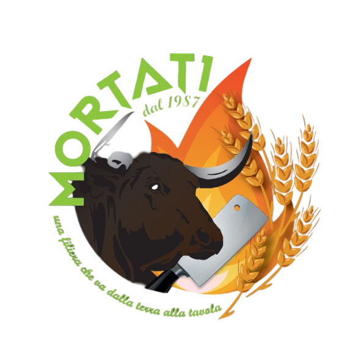

MENÙ
CARTA DEI VINI
CARTA AMARI E DISTILLATI
DESSERT
MACELLERIA SALUMERIA
Viale delle Querce - Castrovillari (CS)
RISTORANTE BRACERIA
Via Padre Francesco Russo - Castrovillari (CS)
AZIENDA AGRICOLA
C.da Serricelle - Civita (CS)
393 2092990
@mortati_dal1987